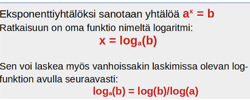

Koronkorkolaskut
Contents
Koronkorkolaskut#
Suurimmassa osassa lainoista käytetään koronkorkomenetelmää lainakorkojen laskemisessa.
Poikkeuksena ovat vain lyhyet, parin kolmen kuukauden vipit.
Koronkorkomenetelmä tunnetaan englannin kielessa nimellä “compound interest method”
Sovellusalueena ovat asuntolainat, kulutusluotot ja pankkikorttiluotot.
Koronkorkomenetelmässä korko liitetään pääomaan kunkin korkojakson lopussa.
Seuraavan korkojakson aikana korkoa kertyy alkuperäisen pääoman ja siihen liitetyn koron yhteissummalle.
Korkolaskuissa käytettävät symbolit#
k = nykyarvo (investoitu summa, alkupääoma)
K = tuleva arvo (karttunut pääoma)
i = korkokanta (laskuissa desimaalimuodossa: esim. 5% = 0.05)
t = aika, korkojaksojen lukumäärä
r = 1 + i = korkokerroin eli korkotekijä, esim. 1.05 jos korko on 5%
Tulevan arvon laskeminen koronkorkomenetelmällä#
Koronkorkomenetelmässä korko lisätään jokaisen korkojakson lopussa lainapääomaan kertomalla korkotekijällä 1 + i.
Korkojakso voi olla vuosi tai kuukausi. Kulutusluotoissa ja pankkikorteissa jälkimmäinen on yleisin.
Jos korkojakso on kuukausi, on korkokerrointa 1 + i laskettaessa käytettävä kuukausikorkoa (vuosikorko/12)
Tulevan arvon laskeminen
Tuleva arvo \(K = k\cdot (1+i)^t\)
k = nykyarvo, i = korkokanta, t = aika (korkojaksojen lukumäärä)
Tulevan arvon laskeminen, kun korkokausi on alle vuosi
Tuleva arvo \(K = k\cdot (1+\frac{i}{n})^{n\cdot t}\)
k = nykyarvo, i = nimellinen vuosikorko, t = aika vuosina, n = korkojaksojen määrä vuodessa.
Tulevan arvon kaava on funktio TULEVA.ARVO Calc-taulukko-ohjelmassa
=TULEVA.ARVO(korko;erien määrä; ;lainamäärä) (kolmas argumentti jätetään tyhjäksi)
esim. 1000 € talletuksen arvo 5v kuluttua 2% korolla: =TULEVA.ARVO(2%;5; ;1000)
jos ohjelmaversio on englannin kielinen, funktio on FV
=TULEVA.ARVO(korko;erien määrä; ;lainamäärä) (kolmas argumentti jätetään tyhjäksi)
esim. 1000 € talletuksen arvo 5v kuluttua 2% korolla: =TULEVA.ARVO(2%;5; ;1000)
jos ohjelmaversio on englannin kielinen, funktio on FV
Esim. Irina tallentaa pankin säästötilille 5000 Euroa 5 vuodeksi. Korkoprosentti on 2.5% p.a (per annum = vuodessa). Laske säästötilin saldo 5 vuoden kuluttua Euron tarkkuudella, kun a) korko maksetaan kerran vuodessa, b)korko maksetaan kuukausittain.
a) Tehtävässä annettua korkoa vastaava korkotekijä r = 1 + i = 1.025.
Loppusaldo \(K = k\cdot (1+i)^t = 5000\cdot 1.025^5 = 5657\)
b) Jos korko maksetaan kuukausittain, kk-korko on 2.5%/12 = 0.2083% ja korkotekijä on 1.002083.
Loppusaldo on tässä tapauksessa \(K = 5000\cdot (1+\frac{0.025}{12})^{12\cdot 5}= 5000\cdot (1.002083)^{60} = 5665\)
Huom! Tämänkin tehtävän tekstin voi kopioida sellaisenaan tekoälyyn (esim. Edge selaimen Bing), joka antaa kaavat ja välivaiheet. Tekoälyn laskin on epätarkka (heitto kymmeniä euroja), joten numerolaskut kannattaa tarkistaa laskimella.
Calc-ohjelmalla: a) =TULEVA.ARVO(2,5%;5;;5000) b) =TULEVA.ARVO(2,5%/12;5*12;;5000)
Nykyarvon laskeminen (diskonttaus)#
Kun halutaan tietää esim. jonkin tulevan tuoton arvo nykyhetkellä, tarvitaan nykyarvon laskemista eli diskonttausta
Nykyarvon laskukaava
Nykyarvo \(k = \frac{K}{(1+i)^t}\hspace{1cm}\) joka voidaan esittää myös muodossa
\(k = K {(1+i)}^{-t} \)
K = tuleva arvo, i = korkokanta, t = aika (korkojaksojen lukumäärä)
Paavo sijoittaa 20000 € kohteeseen, josta arvioi saavansa 24000 € myydessään sen 5 v kuluttua. Paavo tavoittelee 4.0% prosentin voittoa investoinnille. Toteutuuko tavoite?
Lasketaan myyntihinnan nykyarvo 4 % korkokannalla. \(k = K {(1+i)}^{-t} = 24000\hspace{1mm} {1.04}^{-5} = 19726\)
Myyntihinnan nykyarvo on pienempi kuin investoitu summa 20000, joten Paavon tavoite ei toteudu.
Korkokannan i ratkaiseminen koronkorkokaavasta#
Korkokannan (eli korkoprosentin) laskeminen
Korkokanta \(i = \sqrt[t]{\frac{K}{k}}-1\)
K = tuleva arvo, k=nykyarvo, t = aika (korkojaksojen lukumäärä)
Kaavan perustelu:
\(K = k {(1+i)}^{t} \Rightarrow \frac{K}{k} = (1+i)^t \Rightarrow 1+i=\sqrt[t]{\frac{K}{k}}\Rightarrow i = \sqrt[t]{\frac{K}{k}}-1 \)
Paavo sijoittaa 20000 € kohteeseen, josta arvioi saavansa 24000 € myydessään sen 5 v kuluttua. Paavo tavoittelee 4.0% prosentin voittoa investoinnille. Toteutuuko tavoite? Laske Paavon saama todellinen korko?
Lasketaan Paavon saama todellinen korko. \(i = \sqrt[t]{\frac{K}{k}}-1 =\sqrt[t]{\frac{24000}{25000}}-1 = 0.037=3.7\%\)
Todellinen korko jää alle Paavon tavoitteen.
Ajan ratkaiseminen koronkorkokaavasta#
Jos halutaan laskea, missä ajassa alkupääoma k karttuu arvoon K korkokannalla i, pitää ratkaista koronkorkokaava ajan t suhteen. Toinen tapa olisi käyttää laskimen yhtälönratkaisinta.
Ajan laskeminen
Aika (=korkojaksojen määrä) \(t = \frac {log(\frac{K}{k})}{log(1+i)}\)
K = tuleva arvo, k=nykyarvo, t = aika (korkojaksojen lukumäärä)
Kaavassa esitetty logaritmifunktio on kehitetty nimenomaan eksponenttiyhtälön \(a^x = b\) ratkaisuun. Vanhoissa funktiolaskimissa on olemassa vain log-näppäin, joka ratkaisee yhtälön \(10^x = b\). Se on aivan riittävä, koska muilla kantaluvun a arvoilla voidaan käyttää ao. muunnoskaavaa.

Kaavan perustelu: \(K = k {(1+i)}^{t} \Rightarrow (1+i)^t = \frac{K}{k} \Rightarrow t = \frac {log(\frac{K}{k})}{log(1+i)} \)
Missä ajassa 1000 euron pankkitalletus kasvaa 1200 euroon, kun korko on 3.0% p.a ja korko lisätään kuukausittain pääomaan?
Korkojakso on kuukausi, joten lasketaan kuukausikorko, joka on 3.0%/12 = 0.25%.
Korkotekijä, jota käytetään joka kuukauden lopussa on 1 + i = 1 + 0.0025 = 1.0025.
Tapa1: \(t = \frac {log(\frac{K}{k})}{log(1+i)} = \frac {log(\frac{1200}{1000})}{log(1.0025)} = 73 kk \)
Vastaus: 73 kk kuluttua eli 6 v 1 kk kuluttua.
Tapa2: Ratkaistaan aika t yhtälöstä \(K = k(1+i)^t\) laskimen yhtälön ratkaisimella: Monissa laskimossa komento on solve(1200 =1000*1.0025^t, t). Laskin antaa tulokseksi t = 73
Annen auton arvo on nyt 5000 €. Monenko vuoden kuluttua arvo on enää 1000 € olettaen, että ko. automallin arvo putoaa 15% vuodessa?
Korko on tässä tapauksessa negatiivinen luku -0.015, joten korkotekijä 1 + i = 0.85
Tapa1: \(t = \frac {log(\frac{K}{k})}{log(1+i)} = \frac {log(\frac{1000}{5000})}{log(0.85)} = 9.9 \)
Vastaus: 9.9 vuoden kuluttua.
Tapa2: Ratkaistaan aika t yhtälöstä \(K = k(1+i)^t\) laskimen yhtälön ratkaisimella: Monissa laskimossa komento on solve(1000 = 5000*0.85^t, t). Laskin antaa tulokseksi t = 9.9